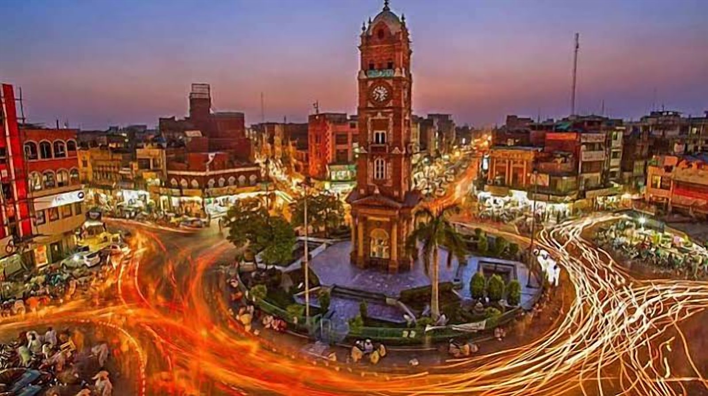

Home / Service Areas / Faisalabad
Car Towing Faisalabad
If you find yourself in a situation where your car has broken down and you’re left stranded, you need reliable car towing in Faisalabad. Whether you’re driving along busy roads, through industrial areas or between cities you may encounter problems with your vehicle. If your car has become unsafe to drive, contact us for car towing solutions.
TowingMechanicRecovery
Services in Faisalabad
How we can help in Faisalabad
Choose a service to open WhatsApp with your city already mentioned.


Our car towing solutions will help drivers get their vehicles safely moved. We can offer solutions for any type of car including small hatchbacks, family cars, SUVs and more. We can discuss towing solutions based on the condition of your vehicle.
If you need emergency recovery solutions, a tow truck for an accident or your car has broken down on the road we can help. Simply give us your location.
Professional Car Towing Faisalabad
If your car encounters issues whilst on the road you can be left stranded. If your car suffers from engine failure, overheating, transmission issues or an accident you may be unable to move your vehicle. To avoid causing further issues, contact us to arrange the right car towing solutions.
Our vehicle towing solutions can help you move your car. Whether you need to move your car to a local mechanic, repair centre, back home or between cities we can discuss the right solutions.
Our car towing solutions include:
- Emergency towing
- Accident towing
- Engine failure
- Vehicle not starting
- Local/long distance towing
- SUV/4x4 recovery
- Heavy duty towing
- Garage/workshop transfers
- Vehicles that cannot be driven
We aim to make your recovery as easy as possible by providing the right towing equipment for your needs.
Car Recovery Near Me Faisalabad
If your vehicle breaks down unexpectedly you can look for car recovery near me. Whether you’ve broken down near your home, shopping centres, industrial areas or on busy roads we can help.
Our vehicle recovery solutions can help drivers get their vehicles moved.
We can discuss recovery solutions for:
- Sudden engine failure
- Accidents
- Transmission/mechanical issues
- Vehicle not starting
- Long distance breakdowns
- Vehicle needs moving to a mechanic
- Damaged vehicles that cannot be driven safely home
If you’re looking for car recovery near me please give us your precise pick-up location and vehicle details.
Tow Truck Near Me Faisalabad
If you’re looking for a tow truck near me in Faisalabad we can provide the right towing vehicle. Depending on what type of vehicle you have, such as small hatchbacks, luxury cars, SUVs or accident damaged vehicles we can discuss the right solutions.
We can discuss towing solutions for:
- Small cars/hatchbacks
- Family cars/luxury cars
- SUVs/4x4s
- Accident damaged cars
- Mechanical failure
- Local towing
- Long distance transfers
When requesting a tow truck please let us know the make/model of your car, location and where you would like your car to go.
Emergency Car Recovery Faisalabad
Having a breakdown on the road can be very stressful. If you break down on busy roads or unfamiliar areas of the city you need the right solutions.
If you suffer from engine issues, sudden mechanical failure or damage from an accident we can provide the right emergency recovery solutions.
We can discuss recovery solutions for:
- Unexpected breakdowns
- Overheating/mechanical failure
- Damage from accidents
- Vehicle not starting
- Breakdowns on busy roads
- Immediate transfer to a workshop
If your car breaks down please turn on your hazard lights and move to a safe place away from traffic if possible. Do not attempt to drive a vehicle that has serious mechanical or accident damage.
Heavy Duty Towing Faisalabad
Some vehicles cannot be moved with standard towing vehicles. If you have larger vehicles such as SUVs, 4x4s or commercial vehicles we can provide specialist recovery solutions.
We can discuss heavy duty towing solutions for:
- Smaller cars
- Family cars
- SUVs
- Accident damaged vehicles
- Mechanical failure
- Local transfers
- Long distance transfers
When requesting heavy duty towing please let us know the make/model of your car, approximate weight, location, condition and damage, where you’d like your car picked up/dropped off and if there are any special loading requirements.
Providing accurate information will help us determine the right equipment for your recovery.
Car Towing Services Faisalabad
Vehicle breakdowns can occur anywhere. Whether you’ve broken down in residential areas, markets or on main roads we can discuss towing solutions for your needs.
Car Towing D Ground Faisalabad
D Ground is a popular shopping/commercial area in Faisalabad. If you’ve broken down and your car has mechanical issues or is unable to move we can provide the right car towing solutions. Let us know your precise location and vehicle condition so we can discuss recovery solutions.
Car Recovery Susan Road Faisalabad
If you’ve broken down unexpectedly on Susan Road it can cause some inconvenience. If your car has suffered from engine failure, accident damage or issues starting we can provide the right vehicle recovery solutions to move your car to your preferred garage. Let us know where you would like your car picked up and where you would like it to go.
Tow Truck Jaranwala Road Faisalabad
If you encounter unexpected issues with your vehicle you may need a reliable tow truck near Jaranwala Road. If your car has broken down or needs accident recovery let us know your precise roadside location.
Car Towing Sargodha Road Faisalabad
If you’ve broken down on Sargodha Road it may not be safe to continue driving. We can discuss towing solutions to help you move your vehicle. If you have a vehicle that won’t start, mechanical failure or accident damage let us know your vehicle details and where you would like it to go.
Vehicle Recovery Canal Road Faisalabad
Canal Road is an important road for drivers travelling around Faisalabad. If you’ve broken down unexpectedly this can cause disruption to your plans. If you cannot continue to move your car safely we can discuss vehicle recovery solutions to help move your car to a local workshop, home or other location.
Car Towing Satiana Road Faisalabad
Vehicle breakdowns can occur on Satiana Road whilst commuting or travelling longer distances. If your car has suffered from engine issues or accident damage we can provide the right towing vehicle. Let us know your precise location and vehicle requirements.
Car Recovery Peoples Colony Faisalabad
If your vehicle has broken down in Peoples Colony you may need help moving it to a mechanic. We can discuss car recovery solutions to help with vehicles that won’t start, mechanical issues or accident damage. Let us know the model of your vehicle and its current location.
Car Towing Madina Town Faisalabad
If you’ve broken down in Madina Town it can cause some inconvenience. If your vehicle is no longer safe to drive we can provide the right towing solutions to move your car to your preferred location. Please discuss your recovery requirements and estimated costs.
Local & Long Distance Vehicle Transport Faisalabad
Sometimes cars need to be moved outside of the city. Whether you’ve had a mechanical failure, accident damage or other issues.
It’s important to choose the right towing equipment for your needs.
We can discuss moving your vehicle from Faisalabad to various locations including Lahore, Gujranwala, Sargodha, Islamabad and other cities depending on availability.
Long distance vehicle transport requires your vehicle to be loaded properly and secured. This will help protect your car.
When requesting an estimate please let us know:
- Pick-up location in Faisalabad
- Where you would like your car to go
- Make/model of car
- Vehicle condition
- Special transport requirements
This will help us determine the right recovery solutions and estimated costs.
Why Choose Our Car Recovery Faisalabad?
Choosing the right recovery company to move your vehicle is important. Choosing a company with the right equipment, careful handling and clear pricing will help make your towing as easy as possible.
Important considerations include:
- Right towing equipment – The recovery equipment should be suitable for your vehicle’s weight, size and condition.
- Careful handling – Your vehicle will be loaded and secured properly to reduce any chance of further damage.
- Clear pricing – You’ll know how much your towing will cost.
- Convenient pick-up – Let us know your precise location.
- Flexible drop-off – Choose where you would like your vehicle to go.
- Local & intercity transport – We can discuss towing solutions for both short and long distance.
Explain what type of vehicle you need moved. Whether you need to move a hatchback, saloon car, SUV or larger vehicle.
We want to help drivers get the right vehicle transport.
Book Car Towing Faisalabad
Having a breakdown can put a spanner in your day. By choosing the right transport solutions it can make the situation easier.
If you’ve broken down on busy roads, suffered from accident damage or serious mechanical issues do not risk causing further damage by driving your vehicle when it is unsafe.
If you need car towing in Faisalabad, emergency car recovery, tow truck near me or heavy duty vehicle transport please get in touch.
Let us know where you would like your car picked up, make/model, current condition and where you would like it to go.
Contact us today for reliable car towing solutions in Faisalabad.
How it works
Three simple steps
01
Contact Us
Call MECHOTOW or start a WhatsApp conversation.
02
Explain Your Situation
Share your location, vehicle details, and the type of assistance required.
03
Confirm Availability
Discuss service availability, pricing, and the next steps directly with the MECHOTOW team.
Sending a message or form does not confirm a booking or dispatch a driver. The team will confirm with you directly.
Also serving
Nearby service areas


On the map
Service area: Faisalabad
City-level map showing the service area. Contact us with your exact location to confirm availability.
FAQs
1. Where can we find car towing services in Faisalabad?
We can offer a local car towing and recovery service. Just let us know where you are, what car you have and where you need it taken.
2. How can I find local car recovery services in Faisalabad?
We can help you find local car recovery services. We can give you an overview of the services available in your area. Let us know how far they can come, what equipment they have, how much they will charge and how long they will take.
3. How much does car towing cost in Faisalabad?
The cost of towing your car will depend on how far you need it going, what type of car you have, the condition of the car, what equipment is required and where you want it to go. Let us know where you want it collected from and where you want it delivered to so we can give you an approximate price.
4. Can we offer tow trucks in your area in case of a breakdown?
Yes we can. Let us know exactly where you are and why you cannot drive your car.
5. Do you offer car recovery in D Ground and Susan Road?
Yes we can. Let us know the condition of your car and exactly where you want it collected from.
6. Can we offer towing services on Jaranwala Road and Sargodha Road?
Yes we can. Let us know where you want it collected from so we can discuss the best recovery option for you.
7. Can we offer heavy duty towing for larger SUVs/4x4s?
We may be able to offer heavy duty towing for larger SUVs and 4x4s. The right recovery equipment will depend on the weight, size and condition of your vehicle.
Need help right now?
Call or message MECHOTOW and explain your situation. The team will confirm availability and next steps with you.